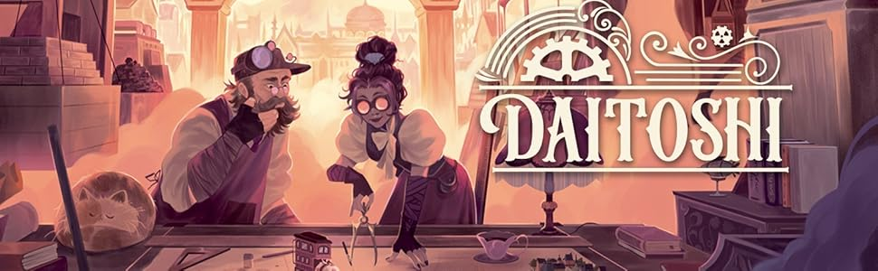
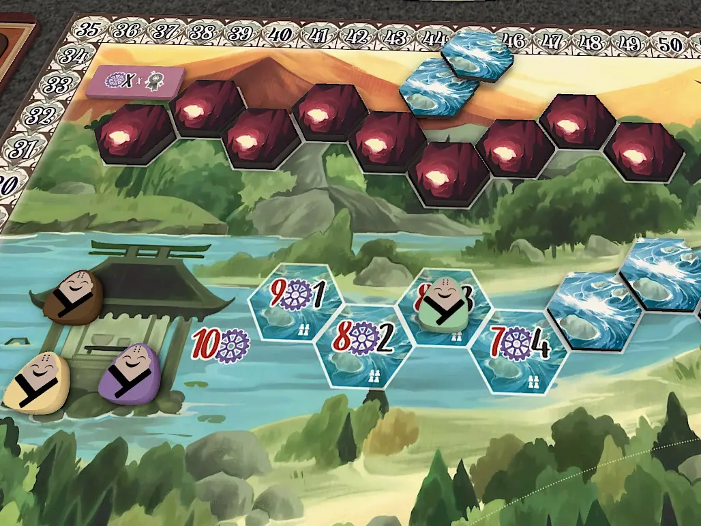

Daitoshi se sitúa cronológicamente antes de los eventos de Sand. En este periodo, la humanidad gozaba de una libertad técnica absoluta, liderada por magnates que buscaban construir la metrópolis definitiva. Sin embargo, este progreso tenía una condición ineludible: para alimentar la gran ciudad steampunk, los jugadores deben explotar la tierra, destruyendo el entorno verde hasta convertirlo en el páramo retratado en el futuro de la saga.

La Ira de los Protectores
Daitoshi no es solo construcción; es **consecuencia**. Los Yokai, protectores de la tierra en la saga Kemushi, reaccionan ante la destrucción del medio ambiente.
"Los Yokai tenían que contraatacar una vez que comenzabas a destruir el medio ambiente, y tenía que ser algo que los jugadores realmente notaran."
Esta tensión se manifiesta mecánicamente cuando un jugador acumula demasiados hexágonos de un mismo tipo de tierra. Los Yokai imponen penalizaciones severas: reducen el número de trabajadores que puedes mantener o aumentan el coste de vapor en tus fábricas. Gestionar esta furia es la clave para no sucumbir antes de que la ciudad alcance su gloria.
